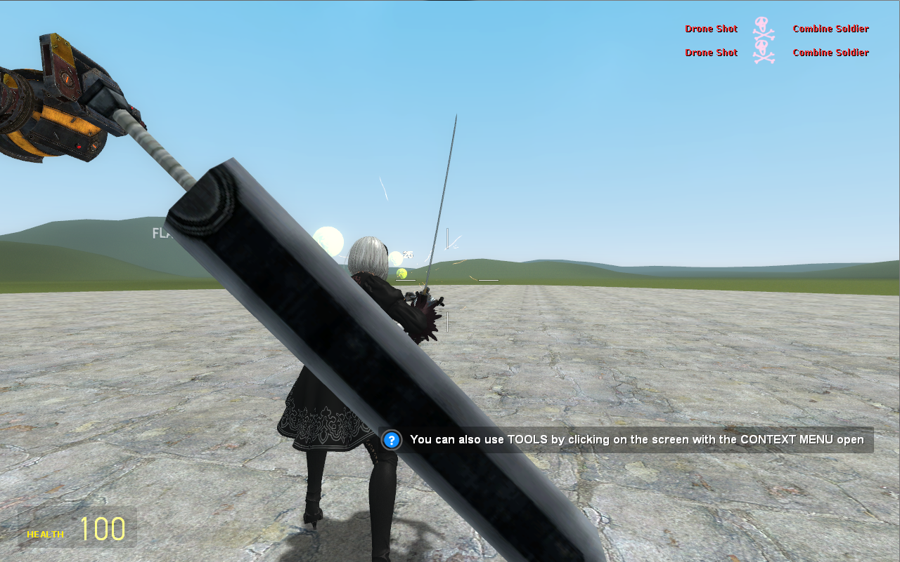

Other Work
Game Modding
I spend much of my free time working on hobbies that pertain to my field of speciality. One such field is programming and scripting. Particularly and Lua, I deal with a lot of work when it comes to extending scripts for Garry's Mod and Don't Starve.
Besides the one addon I have posted on the workshop, namely The Hakurei Experience (Touhou: Hakurei Reimu Mod), I have many of what people would call Legacy Mods. These mods are not uploaded to the workshop and are instead placed in folders in the addon directory associated with Garry's Mod.
One example of scripting that relies on understanding of 3D space, physics, AI, server-client communication and scripting is a weapon I have based on the newly released Nier Automata. In this weapon I created, it is necessary for the script to keep track of oncoming hostile entities, handle the physics of the movement of the companion, handle the physics of your secondary weapon on your back, and to maintain their positions despite latency when present on a server.

Don't Starve has no surviving API documentation, making scripting in its version of Lua very difficult. Additionally, there is no formal compiler for Lua, making it doubly hard as even the slightest error can crash this game when modding. Similarly to Garry's Mod, Don't Starve has its own version of Legacy Mods, allowing me to utilize mods without having them posted on the workshop.
This specific character in Garry's Mod was initially left as a blank slate two years ago, so I took the liberty of personally adding my own additions to them. This character has a dynamic stat progression depending on their current condition. The less healthy they are the more able they become in combat, movement, but at the trade-off of receiving more damage and quickly losing more conditioning. Additionally, he has several special interactions with existing entities which bring out further abilities. Given the difficulty of essentially "hooking" functions to pre-existing ones in Don't Starve, programming this character, I had to keep in mind the existence of other possible script extensions.